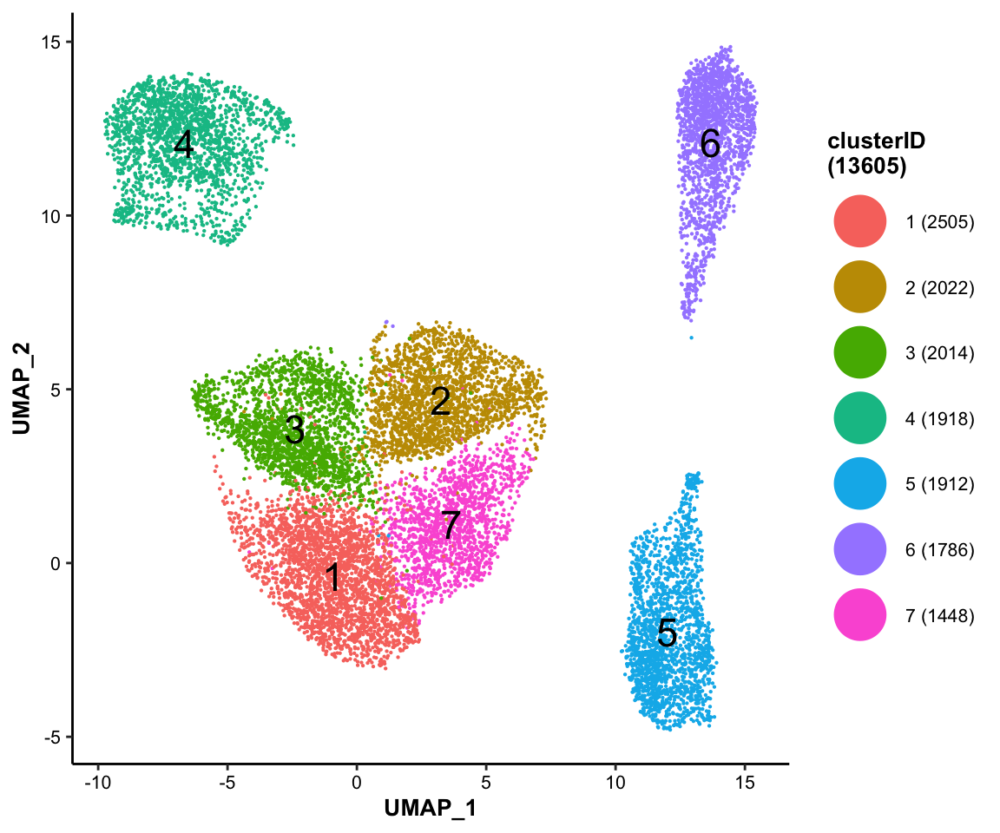
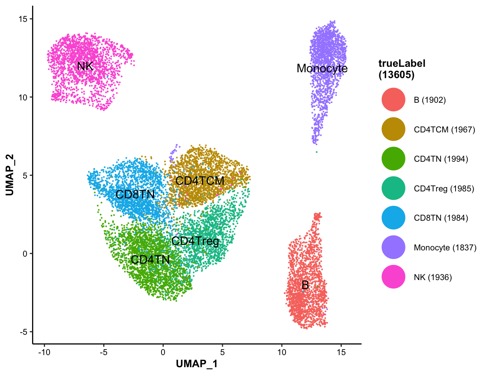
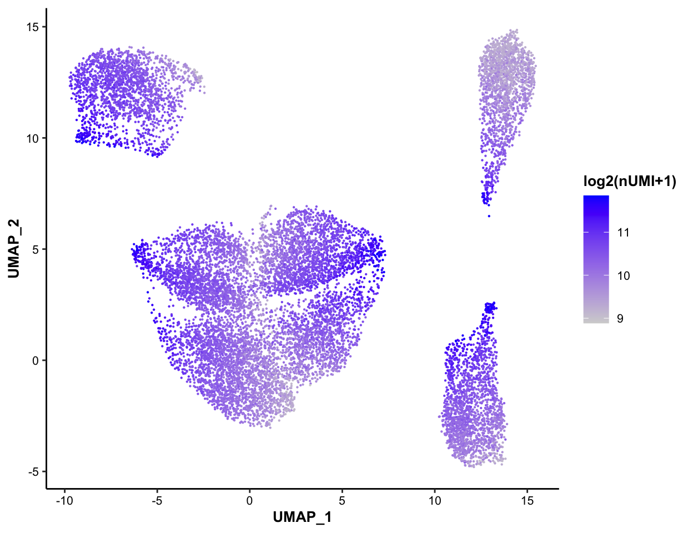
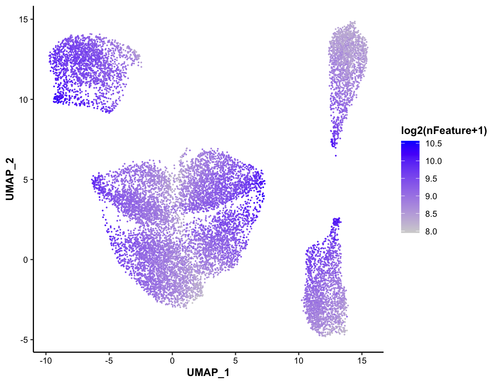
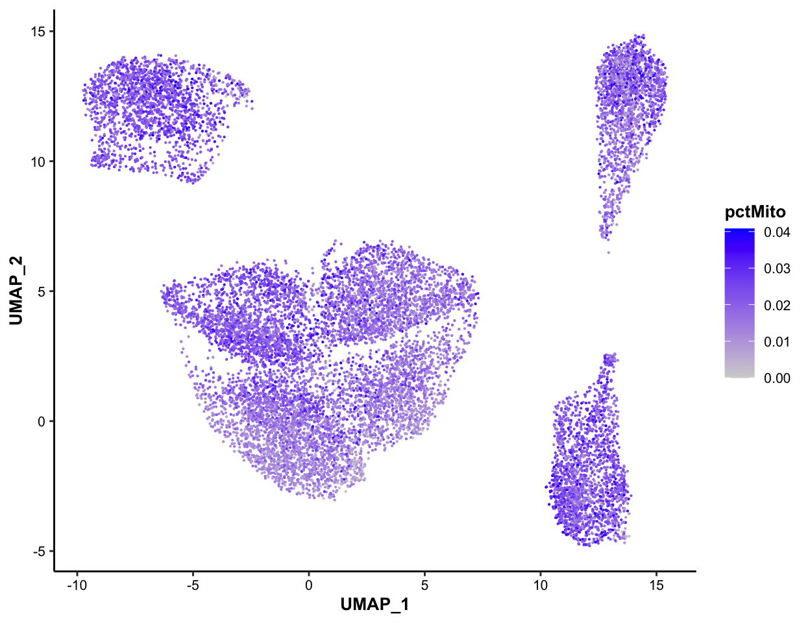

Chapter 7 MI-based clustering analysis
In this chapter, we will introduce more about the MICA component, and walk you through the MICA workflow, including preparing inputs, running MICA, visualizing and integrating MICA outputs into SparseEset object.
7.1 Introduction to MICA
MICA (Mutual Information-based Clustering Analysis) is a clustering tool designed for single cell genomics data. Compared to most existing single-cell clustering algorithms, MICA has two unique features:
- MICA uses mutual information to measure cell-cell similarity for unsupervised clustering analysis, while most existing tools employ linear-transformation of PCA and/or co-expression analysis using linear Pearson or Spearman correlations that may not capture the nonlinear cell-cell distance.
- MICA uses all high-quality features for clustering, while most existing tools select the top highly variable features to improve the clustering speed. This is arbitrary and may lose the information that can distinguish close cell states.
MICA is developed using Python framework, to take its strengths in calculation speed and memory consumption. A lot of effort has been made to improve the interoperability between Python and R. Now MICA works seamlessly with the SparseExpressionSet object. The input of MICA can be easily generated from the SparseExpressionSet object by generateMICAinput(), and the output of MICA, the clustering results, can be effortlessly visualized by MICAplot() and integrated into SparseExpressionSet object by addMICAoutput().
7.2 Generate MICA input
The standard input of MICA is a normalized and log-transformed gene expression matrix. scMINER can generate this matrix from sparse eSet object and save it into a file that can be directly read by MICA. MICA accepts .h5ad or .txt format as the input file, which can be easily generated by embedded function generateMICAinput():
## generate MICA input in txt format
generateMICAinput(input_eset = pbmc14k_log2cpm.eset, output_file = "/work-path/PBMC14k/MICA/micaInput.txt", overwrite = FALSE)
## check the format of MICA input
mica_input <- read.delim(system.file("extdata/demo_pbmc14k/PBMC14k/MICA/micaInput.txt", package = "scMINER"), header = T, sep = "\t", row.names = 1)
mica_input[1:5,1:5]To use the .h5ad format, run the codes below.
## generate MICA input in h5ad format: anndata package is needed
generateMICAinput(input_eset = pbmc14k_log2cpm.eset, output_file = "/work-path/PBMC14k/MICA/micaInput.h5ad", overwrite = FALSE)In addition to generating the standard MICA input file, generateMICAinput() also returns the recommended commands of running MICA. You can copy the commands, modify according and run them.
7.3 Run MICA
MICA features two different modes named by their different dimension reduction techniques:
- Multi-Dimensional Scaling (MDS) mode: this mode is more accurate and robust for small datasets (less than 5,000 cells, be default) due to its global dimension reduction nature;
- Graph Embedding (GE) mode: this mode works better with large datasets (more than 5,000 cells, by default) using a graph embedding approach to explore distant neighbor cells.
In this case, since there are 13,605 cells, we will use the MICA GE mode for the clustering:
mica ge -i /work-path/PBMC14k/MICA/micaInput.txt -o /work-path/PBMC14k/MICA/micaOutput -minr 0.1 -maxr 9.0 -ss 0.05 -nw 4This command will generate the clustering results of multiple resolutions, from 0.1 to 9.0, with a step size of 0.05. MICA supports multi-threading. The -nw 4 here sets 4 threads to run in parallel. You can change it accordingly to speed up the clustering analysis.
7.4 Integrate MICA outputs into SparseEset object
MICA generates several files and save all of them in the output directory specified by the user with -o argument. The core, and only, output file we need for subsequent analysis is the clustering label file named in the format of ProjectName_clustering_VisualizeMethod_euclidean_NumberOfDimensions_Resolution.txt. In this case, since we used a range of resolutions, there are several clustering label files generated, one for each resolution. Based on the knowledge about PBMC14k dataset, we compared the results of different resolutions and picked clustering_UMAP_euclidean_20_2.05.txt for subsequent analysis.
micaOutput <- read.table(system.file("extdata/demo_pbmc14k/MICA/clustering_UMAP_euclidean_20_2.05.txt", package = "scMINER"), header = TRUE, sep = "\t", quote = "", stringsAsFactors = F)
head(micaOutput)## ID X Y label
## 1 CACTTTGACGCAAT 14.91650 13.04096 6
## 2 GTTACGGAAACGAA 14.57031 10.27093 6
## 3 CACTTATGAGTCGT 14.28869 13.61674 6
## 4 GCATGTGATTCTGT 14.12546 13.36319 6
## 5 TAGAATACGTATCG 14.91227 11.19407 6
## 6 CAAGAAGACCCTCA 15.34154 12.25821 6As shown above, the clustering label file contains four columns:
ID: cell barcodes;X: coordinates of UMAP_1 or tSNE_1;Y: coordinates of UMAP_2 or tSNE_2;label: labels of predicted clusters.
The clustering result can be easily easily added to the SparseExpressionSet object by addMICAoutput():
pbmc14k_log2cpm.eset <- addMICAoutput(pbmc14k_log2cpm.eset, mica_output_file = system.file("extdata/demo_pbmc14k/MICA/clustering_UMAP_euclidean_20_2.05.txt", package = "scMINER"), visual_method = "umap")
head(pData(pbmc14k_log2cpm.eset))## trueLabel_full trueLabel projectID nUMI nFeature pctMito
## CACTTTGACGCAAT CD14+ Monocyte Monocyte PBMC14k 764 354 0.01832461
## GTTACGGAAACGAA CD14+ Monocyte Monocyte PBMC14k 956 442 0.01569038
## CACTTATGAGTCGT CD14+ Monocyte Monocyte PBMC14k 629 323 0.02066773
## GCATGTGATTCTGT CD14+ Monocyte Monocyte PBMC14k 875 427 0.02628571
## TAGAATACGTATCG CD14+ Monocyte Monocyte PBMC14k 1060 445 0.03207547
## CAAGAAGACCCTCA CD14+ Monocyte Monocyte PBMC14k 849 384 0.01531213
## pctSpikeIn CellID UMAP_1 UMAP_2 clusterID
## CACTTTGACGCAAT 0 CACTTTGACGCAAT 14.91650 13.04096 6
## GTTACGGAAACGAA 0 GTTACGGAAACGAA 14.57031 10.27093 6
## CACTTATGAGTCGT 0 CACTTATGAGTCGT 14.28869 13.61674 6
## GCATGTGATTCTGT 0 GCATGTGATTCTGT 14.12546 13.36319 6
## TAGAATACGTATCG 0 TAGAATACGTATCG 14.91227 11.19407 6
## CAAGAAGACCCTCA 0 CAAGAAGACCCTCA 15.34154 12.25821 67.5 Visualize the MICA output
scMINER provides a function, MICAplot() to easily visualize the clustering results on a 2D plot, UMAP or tSNE. And it can be colored by multiple variables, including cluster label, sample source, nUMI, nFeature, pctMito and more.
7.5.1 Color-coded by cluster labels
library(ggplot2)
MICAplot(input_eset = pbmc14k_log2cpm.eset, color_by = "clusterID", X = "UMAP_1", Y = "UMAP_2", point.size = 0.1, fontsize.cluster_label = 6)
7.5.2 Color-coded by true label of cell types
MICAplot(input_eset = pbmc14k_log2cpm.eset, color_by = "trueLabel", X = "UMAP_1", Y = "UMAP_2", point.size = 0.1, fontsize.cluster_label = 4)
7.5.3 Color-coded by nUMI, for QC purpose
MICAplot(input_eset = pbmc14k_log2cpm.eset, color_by = "nUMI", do.logTransform = TRUE, point.size = 0.1)## The values in "nUMI" have been transformed by log2(value + 1). To turn transformation off, set do.logTransform = FALSE.
7.5.4 Color-coded by nFeature, for QC purpose
MICAplot(input_eset = pbmc14k_log2cpm.eset, color_by = "nFeature", do.logTransform = TRUE, point.size = 0.1)## The values in "nFeature" have been transformed by log2(value + 1). To turn transformation off, set do.logTransform = FALSE. ### Color-coded by pctMito, for QC purpose
MICAplot(input_eset = pbmc14k_log2cpm.eset, color_by = "pctMito", do.logTransform = FALSE, point.size = 0.1)